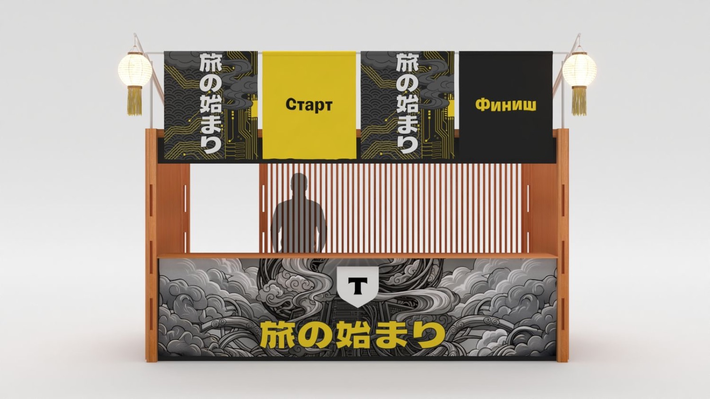
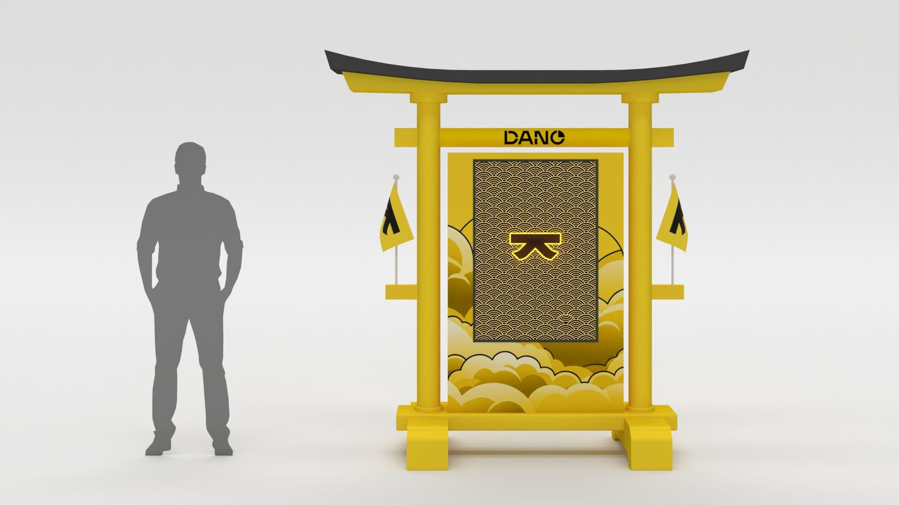
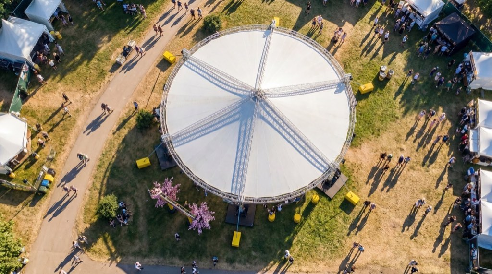

чёрный пояс в it
- клиент
- Т-Банк
- год
- 2026
- отрасль
- IT
- направления
- btl
задача
сделать на студенческом фестивале зону-квест, которая знакомит с образовательными продуктами Т-Банка
идея
взять за основу японскую эстетику: бренд-зона становится додзё, а образование превращается в путь самурая









как сделали
- 01проектирование
локацию построили в 3D и проверили путь гостя ещё до того, как привезли конструкции
- 02квесты и интерактивы
бренд-зона площадью 400 м² с семью интерактивными станциями — от командных соревнований до стилизованного лимонадного бара
- 03вовлекающая механика
гости соревновались за печати — их получали и проигравшие, но чем больше побед, тем выше уровень мерча
- 04дизайн
станции, декор и форма промоутеров собраны в одном ярком стиле
результат
- 2100 гостей, привлекла бренд-зона